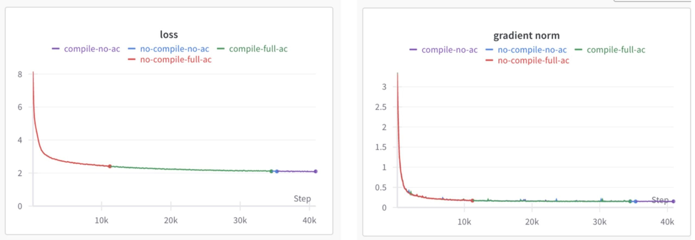
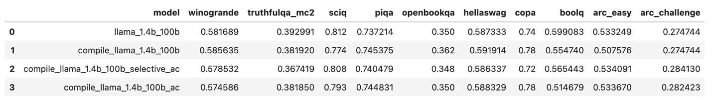

Recently, we demonstrated how FSDP and selective activation checkpointing can be used to achieve 57% MFU (Model Flops Utilization) for training a 7B model on A100 GPUs. We also demonstrated how it can train a high quality model, which we open sourced as Granite 7B base model on Hugging Face Hub under the Apache v2.0 license.
We continued our quest to improve the utilization of GPUs by leveraging torch.compile. Using torch.compile and the selective activation checkpointing from our previous work, we achieve a MFU of 68% for the 7B model on A100 GPUs! torch.compile improves training MFU between 10% and 23% for various model sizes.
This blog is organized into three parts: (1) Challenges addressed in order to train using torch.compile, (2) Numerical parity of compile with no-compile, and (3) MFU report.
We open sourced all the code and updated it in the fms-fsdp repository. We are also working with Team PyTorch at Meta to contribute these to the newly released torch titan repository for pre-training.
Challenges of using torch.compile
torch.compile is a graph compilation technique that improves GPU utilization. For details on how torch compile works, we refer the readers to the recent PyTorch paper and associated tutorials. A key challenge in getting torch.compile to perform well is to minimize (or eliminate) graph breaks. We initially started with the Llama implementation provided by Meta, but compiling it caused too many graph breaks resulting in reduced training throughput.
Several portions of the model architecture had to be fixed, with the most important one being the positional embedding layer (RoPE). The typical RoPE implementation uses complex numbers, which was not supported in torch.compile at the time of testing. We implemented RoPE using einops while maintaining parity with the original model architecture implementation. We had to properly cache the frequencies so that we did not run into graph breaks within the RoPE implementation.
Compiling an FSDP model does result in graph breaks, which the PyTorch team at Meta is working to remove. However, these graph breaks as of PyTorch 2.3 are at FSDP unit boundaries and do not affect throughput significantly.
When using custom kernels, we need to wrap each kernel by exposing its API to torch.compile. This involves indicating what parameters are modified in-place, how they are modified, and what shapes and strides will their return values have based on the inputs. In our case, SDPA Flash attention is already integrated appropriately and we were able to get that kernel to work with torch.compile with no graph breaks.
We also noticed that when increasing the amount of data from 2T to 6T tokens, the data loader became a bottleneck. A key reason for this is the fact that previously, we implemented document shuffling in our dataloader naively, by having each worker maintain a list of shuffled document pointers.
With the larger dataset, these pointer lists were growing to hundreds of thousands of entries per worker. Maintaining pointer lists at this scale became expensive enough that cpu contention throttled our training throughput. We re-implemented document shuffling without any pointer lists using a Linear Congruential Generator. LCG is a pseudorandom number generator algorithm that implements a random walk over a population, providing sampling without replacement.
We leveraged the same idea to produce implicit bijective mappings from ordered to shuffled document indices. This enables us to shrink those annoying lists of hundreds of thousands of pointers down to a single integer state for the LCG. This eliminated 80% of the bottleneck and provided a significant boost to our performance. We will devote a separate blog to go into all the details of our performant pre-training data loader.
Numerical Parity of torch.compile and torch.no-compile
We had previously observed parity issues when training with compile and no-compile options, with one of these being related to the use of SDPA. After a few days of intense debugging sessions between the PyTorch teams at Meta and IBM, we were able to achieve parity between PyTorch compile and no-compile modes. To document and verify this parity, we take a mini-Llama model architecture of 1.4B size and train it to 100B tokens in four variations – no-compile, compile with no activation checkpointing, compile with selective activation checkpointing, and compile with full activation checkpointing.
We plot the loss curves and gradient norm for these options below:

Figure 1: Loss curve and gradient norm for various compile options
Further, we run the lm-evaluation-harness and compare the various model scores on different benchmarks and observe no major differences between compile and no-compile, which is shown below.

Figure 2: lm-evaluation-harness comparison of various benchmarks between compile and no-compile
We observe from all these results that compile with all its variants is equal to no-compile option, thus demonstrating parity between compile and no-compile.
MFU report
Finally, like our previous blog, we compute the MFU for four different model sizes on two clusters. One cluster is 128 A100 GPUs with 400 Gbps inter-node connectivity, and the other is 464 H100 GPUs with 3.2 Tbps inter-node connectivity. We use the selective activation checkpointing that we covered in the prior blog in addition to compile. We capture the results in the table below.
| Model size | Batch size | MFU no-compile | MFU compile | Percentage gain (%) |
| 7B | 2 | 0.57 | 0.68 | 20 |
| 13B | 2 | 0.51 | 0.60 | 17 |
| 34B | 2 | 0.47 | 0.54 | 15 |
| 70B | 2 | 0.50 | 0.55 | 10 |
Table 1: MFU results with compile and no compile for Llama2 model architectures on 128 A100 80GB GPUs with 400Gbps internode interconnect
| Model size | Batch size | MFU no-compile | MFU compile | Percentage gain |
| 7B | 2 | 0.37 | 0.45 | 21 |
| 13B | 2 | 0.35 | 0.43 | 23 |
| 34B | 2 | 0.32 | 0.38 | 19 |
| 70B | 2 | 0.32 | 0.38 | 19 |
Table 2: MFU results with compile and no compile for Llama2 model architectures on 464 H100 80GB GPUs with 3.2Tbps internode interconnect
We also had an internal production run on 448 GPUs using a Llama2 7B architecture. Using compile and selective activation checkpointing, with a global batch size of 3.7M, we trained for 4T tokens in 13 days 10 hours!
During training, the data center cooling had to kick in with extra air conditioning and our training team was alerted to this, since we were using the GPUs quite effectively ☺
One key observation from the tables 1 and 2 is that the MFU numbers do not linearly scale with model size. There are two possible explanations that we are actively investigating, one is the scalability of FSDP as model size increases and when tensor parallel needs to be enabled to more effectively use the GPU and the other is batch size, which can be increased further to get better MFU. We plan to explore FSDP v2 and selective operator checkpointing along with the tensor parallel feature to study the scaling laws of FSDP with model size.
Future Work
We plan to start testing FSDP v2 which will be released as part of PyTorch 2.4. FSDP2 provides per parameter sharding and selective operator checkpointing feature that can potentially provide even better memory-compute tradeoffs.
We have also been engaged with the PyTorch team at Meta to evaluate the new asynchronous checkpointing feature that can further improve the GPU utilization by reducing the time to write checkpoints.
We are exploring extending various Triton kernels currently used in inference to perform backward operations to gain speedups beyond inference only.
Finally, as recent work on use of fp8 is emerging, we plan to explore how we can even further accelerate model training using the new data type that promises a 2x acceleration.
Acknowledgements
There are several teams that have been involved in reaching this proof point and we would like to thank the teams across Meta and IBM. Specifically, we extend our gratitude to the Meta PyTorch distributed and compiler teams and IBM Research.
Multiple people were extensively involved in the effort of achieving torch.compile numerical parity with our models, and we wish to acknowledge the key folks involved in this effort; Animesh Jain and Less Wright at Meta, and Linsong Chu, Davis Wertheimer, Brian Vaughan, Antoni i Viros Martin, Mudhakar Srivatsa, and Raghu Ganti at IBM Research.
Special thanks to Stas Bekman, who provided extensive feedback and helped improve this blog. Their insights have been invaluable in highlighting key aspects of optimizing the training and exploring further enhancements.